| Task | Group Effect | Test-Retest ICC |
|---|---|---|
| Stroop | Massive (~80ms) | **0.60** |
| Flanker | Robust | **0.40** |
| Go/No-Go | Robust | **0.25** |
Measurement Error Is Eating Your Lunch
Shrinkage, Attenuation, and What Changes When We Fix the Estimator
Nathaniel Haines
2026-04-02
Every time we compute a mean per participant, we use an inadmissible estimator
This has consequences far beyond estimation — it corrupts correlations, reliability, rankings, and effect sizes
250 years of independent discoveries all point to the same fix
The Reliability Paradox
Hedge, Powell, & Sumner (2018) tested the reliability of classic cognitive tasks:
Conclusion: “These tasks are severely limited for individual differences research”
But is that the right conclusion?
When Measurement Error Leads Us Astray
Eye-Witness Lineups
Rotello et al. (2015): Sequential vs. simultaneous lineups
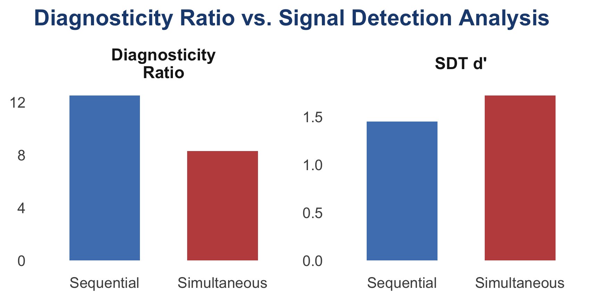
Diagnosticity ratio → sequential is better. SDT → simultaneous is better.
Implicit Association Test
Average test-retest r ≈ 0.4. Payne et al. (2017): “bias of crowds”
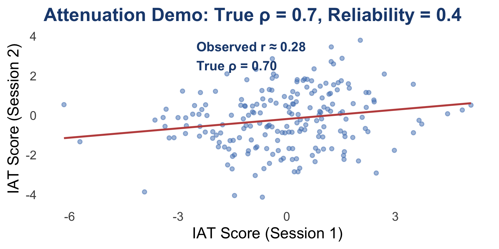
Connor & Evers (2020): Noisy measurement, not contextual sensitivity
fMRI Reliability
Elliott et al. (2020): 90 experiments, mean ICC = 0.397
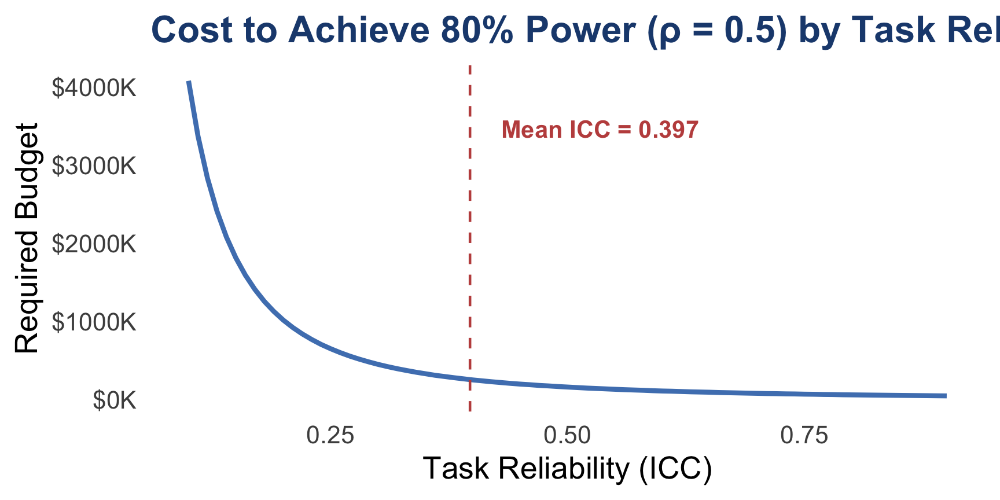
Self-Control Tasks
Enkavi et al. (2019): Self-report vs. behavioral task reliability
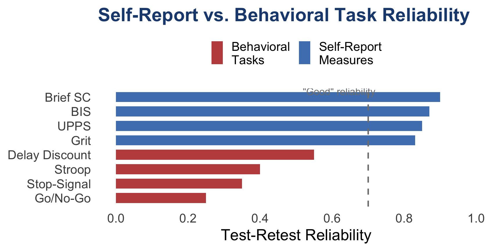
The Common Thread
In every case, measurement error → incorrect inference
The problem is not the tasks
The problem is the estimator
Part I: Shrinkage Estimators
Stein’s Result (1956)
The sample mean \(\hat{\mu}_i = \bar{y}_i\) is the MVUE for a single mean
For 3 or more means simultaneously, it is inadmissible
There exists an estimator with strictly lower total MSE for every possible \(\boldsymbol{\mu}\)
So counterintuitive it became known as Stein’s Paradox
One Insight, Many Discoverers
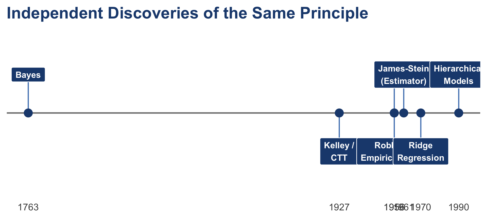
Simulation Setup
\[\mu_i \sim \mathcal{N}(\mu_{\text{pop}},\; \sigma_{\text{pop}}), \quad y_{i,t} \sim \mathcal{N}(\mu_i,\; \sigma_{\text{obs}})\]
| \(N = 30\) individuals, \(n = 10\) observations each | |
| \(\sigma_{\text{pop}} = 2\) (between-person), \(\sigma_{\text{obs}} = 6\) (within-person) | |
| Reliability \(\approx \frac{\sigma^2_{\text{pop}}}{\sigma^2_{\text{pop}} + \sigma^2_{\text{obs}}/n} = \frac{4}{4 + 3.6}\) | ≈ 0.53 |
The Sample Mean: Unbiased but Noisy
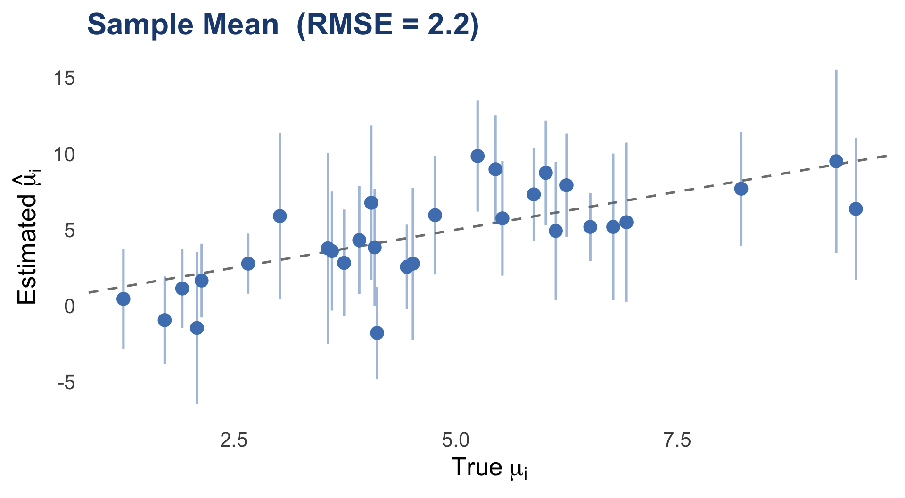
All Shrinkage Methods Converge
Every method takes the same form:
\[\hat{\mu}_i = \hat{\mu}_{\text{pop}} + \hat{B} \cdot (\bar{y}_i - \hat{\mu}_{\text{pop}})\]
where \(\hat{B} = \dfrac{\sigma^2_{\text{pop}}}{\sigma^2_{\text{pop}} + \sigma^2_{\text{obs}}/n_i} \quad = \quad \dfrac{\text{Signal}}{\text{Signal} + \text{Noise}}\)
| Method | Shrinkage Factor |
|---|---|
| James-Stein (1961) | \(1 - \frac{(N-3)\hat{\sigma}^2_{\text{obs}}/n}{\sum(\bar{y}_i - \bar{\bar{y}})^2}\) |
| CTT / Kelley (1920s) | Reliability \(\hat{\rho}\) |
| Empirical Bayes | \(\frac{\hat{\sigma}^2_{\text{pop}}}{\hat{\sigma}^2_{\text{pop}} + \hat{\sigma}^2_{\text{obs}}/n_i}\) |
| Ridge Regression | \(\frac{n_i}{n_i + \lambda}\) where \(\lambda = \sigma^2_{\text{obs}}/\sigma^2_{\text{pop}}\) |
| Hierarchical Models | \(\frac{\hat{\sigma}^2_{\text{pop}}}{\hat{\sigma}^2_{\text{pop}} + \hat{\sigma}^2_{\text{obs}}/n_i}\) |
Six Methods, Same Answer
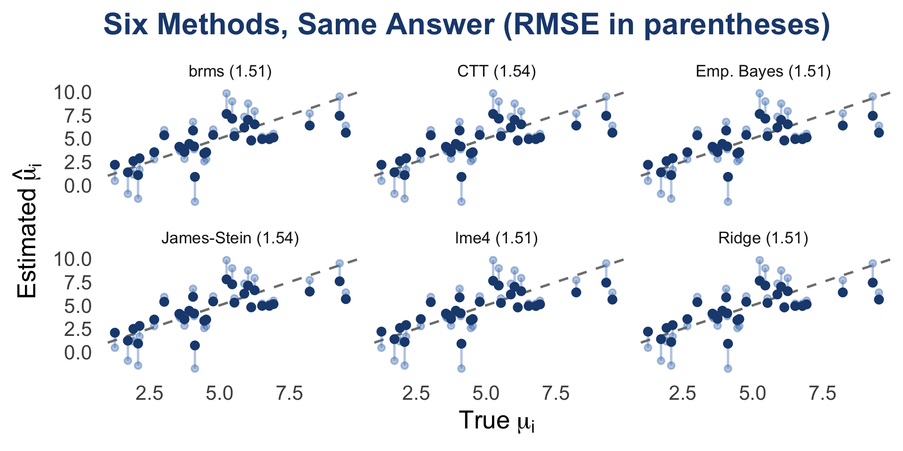
Shrinkage Is Data-Adaptive
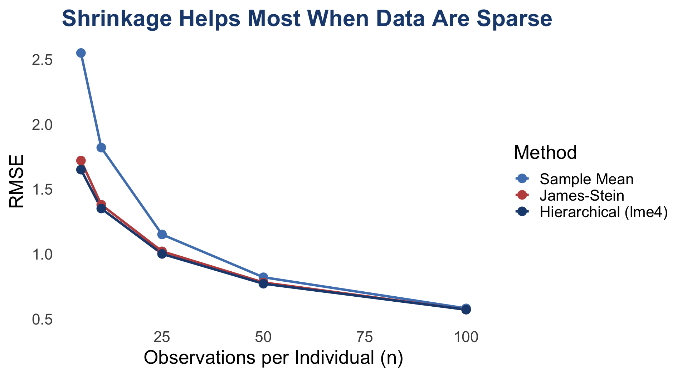
Univariate Summary
For means, shrinkage wins
But what about secondary analyses?
What happens when we correlate noisy estimates?
Part II: The Bivariate Case — Where It Really Matters
The Two-Stage Problem
Most individual differences research follows a two-stage pipeline:
- Compute summary statistics per participant (means, difference scores, slopes)
- Enter those estimates into a secondary model (correlation, regression, group comparison)
Stage 1 treats estimates as if they were the true latent quantities
. . .
Everything downstream is corrupted
Attenuation of Correlations
If two latent traits correlate at \(r_{\theta_1, \theta_2}\), the observed correlation is:
\[r_{\text{obs}} = r_{\theta_1, \theta_2} \cdot \sqrt{\rho_1 \cdot \rho_2}\]
| \(\rho_1\) | \(\rho_2\) | True \(r\) | Observed \(r\) |
|---|---|---|---|
| 0.5 | 0.5 | 0.5 | 0.25 |
| 0.3 | 0.3 | 0.5 | 0.15 |
| 0.5 | 0.8 | 0.5 | 0.32 |
A real effect of \(r = 0.5\) can look like \(r = 0.15\) — “not significant”
Simulation: Attenuation in Action
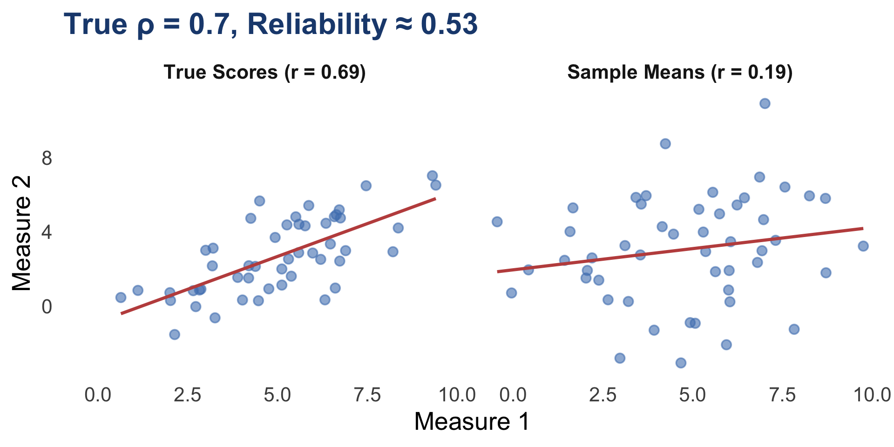
Univariate Shrinkage Does NOT Fix Correlations
Pearson \(r\) is scale and location invariant
Shrinking both axes preserves \(r\) exactly

Multivariate Shrinkage
The scalar shrinkage factor becomes a matrix:
\[\mathbf{B} = \boldsymbol{\Sigma}_{\text{pop}}\left(\boldsymbol{\Sigma}_{\text{pop}} + \boldsymbol{\Sigma}_{\text{obs}}/n\right)^{-1}\]
Off-diagonal elements borrow strength across measures
If individual \(i\) scores high on measure 2, they are pulled upward on measure 1
This is the multivariate generalization of signal / (signal + noise)
Univariate vs. Multivariate Shrinkage

The Generative Modeling Solution
Instead of: 1. Estimate parameters → 2. Correlate estimates
Jointly model both measures and their relationship:
\[y_{i,t}^{(1)} \sim f_1(\theta_i^{(1)}), \quad y_{i,t}^{(2)} \sim f_2(\theta_i^{(2)})\]
\[\begin{bmatrix} \theta_i^{(1)} \\ \theta_i^{(2)} \end{bmatrix} \sim \mathcal{N}\left(\boldsymbol{\mu}, \boldsymbol{\Sigma}\right)\]
The correlation in \(\boldsymbol{\Sigma}\) is estimated jointly with the individual parameters
Measurement error is absorbed by the likelihoods, not propagated into the correlation
Hierarchical Models Recover \(\rho\)
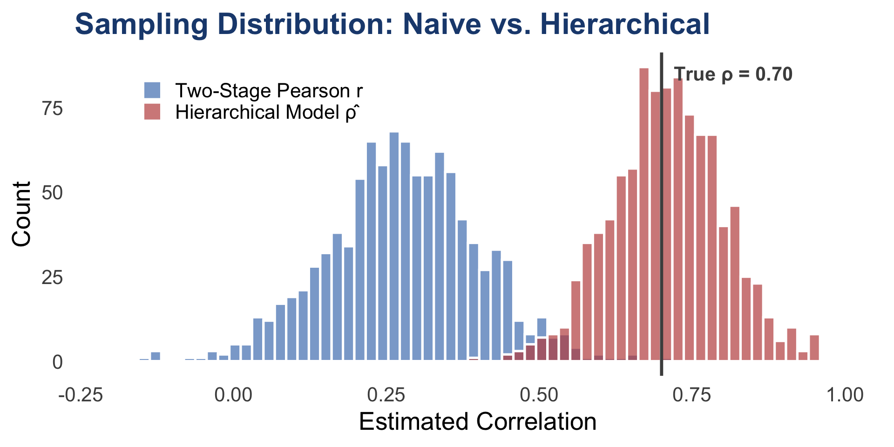
All Four Methods

Multivariate Summary
| Method | ρ̂ | Fixes Correlation? | Proper Uncertainty? |
|---|---|---|---|
| Two-Stage Pearson r | 0.28 | No | — |
| Univariate Shrinkage + r | 0.28 | No | — |
| Spearman Correction | ~0.88 (high var.) | Yes (noisy) | No (can exceed 1) |
| MV Shrinkage (Efron-Morris) | ~0.71 | Yes | Partial |
| Hierarchical (lme4) | ~0.71 | Yes | Partial |
| Hierarchical (brms) | ~0.71 | Yes | Yes |
What Changes With Better Methods?
The Reliability Paradox Disappears
Traditional (Two-Stage)
| Task | ICC |
|---|---|
| Stroop | 0.50 |
| Flanker | −0.13 |
| Posner | 0.17 |
| Go/No-Go | 0.25 |
→
Hierarchical Model
| Task | \(\hat{\rho}\) |
|---|---|
| Stroop | 0.81 |
| Flanker | 0.64 |
| Posner | 0.80 |
| Go/No-Go | 0.68 |
Values from Haines et al. (in press), Psychological Methods
IAT Reliability Revisited
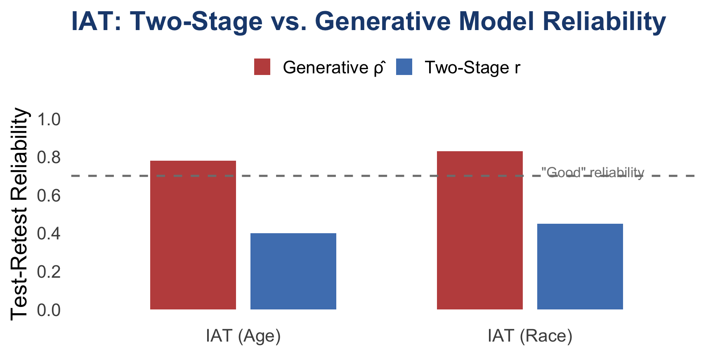
“Bias of crowds” argument is undermined — it was noisy measurement
Full Results: All Tasks × Methods
| Task | Two-Stage ICC | Spearman Corr. | Hierarchical |
|---|---|---|---|
| Stroop | 0.50 | 0.78 | 0.81 |
| Flanker | -0.13 | 0.42 | 0.64 |
| Go/No-Go | 0.25 | 0.61 | 0.68 |
| Posner | 0.17 | 0.55 | 0.80 |
| IAT (Race) | 0.45 | 0.71 | 0.83 |
| IAT (Age) | 0.40 | 0.63 | 0.78 |
| DDM (drift) | 0.55 | 0.73 | 0.82 |
| DDM (threshold) | 0.72 | 0.85 | 0.90 |
NOTE: Verify values against Table 1 of Haines et al. (in press)
Cost Implications Revisited
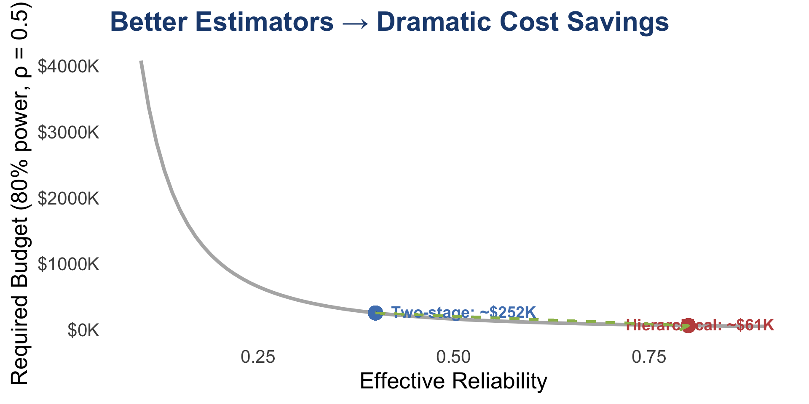
The Paradox Is Not a Paradox
The tasks are not unreliable
The estimator cannot see the signal through the noise
Conclusion
What You Should Take Away
1. The sample mean is inadmissible — use shrinkage estimators (you probably already do via lmer/brms)
2. The real damage is downstream — noisy estimates corrupt correlations, reliability, rankings
3. Don’t do two stages — model everything jointly when possible
4. Report model-based reliability — not summary-statistic reliability
5. Before concluding “null” — ask whether measurement error could explain it
One Principle, Many Names
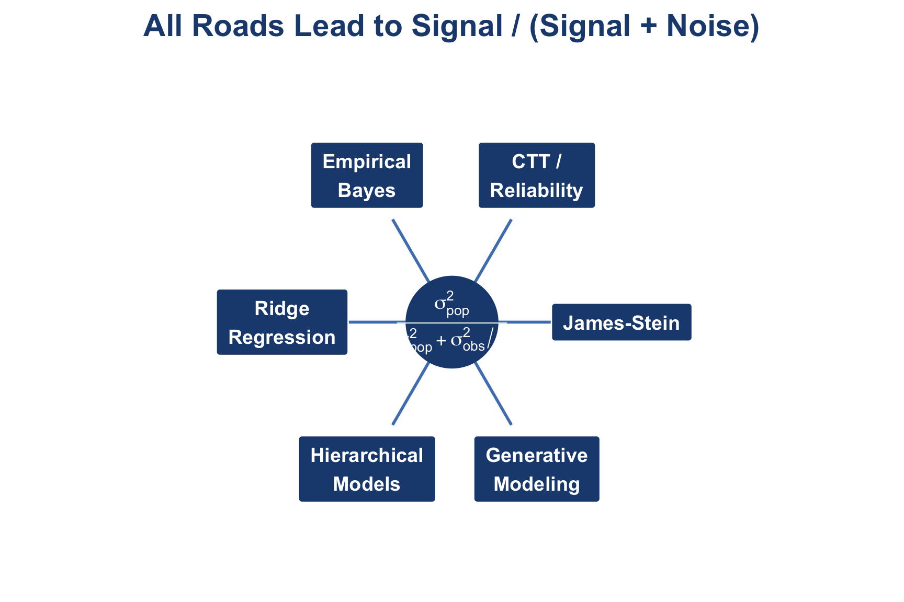
Assumptions and Limitations
Non-normal populations — heavy tails or mixtures → shrinkage toward grand mean harmful for true outliers
Non-exchangeability — shrinking toward wrong target (e.g., patients toward controls) worse than no shrinkage
Misspecified likelihoods — if your generative model is wrong, shrinkage can introduce systematic bias
This is where hierarchical models win over JS/CTT/EB
You can model the structure rather than assuming exchangeability
The sample mean had a good run.
Questions?
Nathaniel Haines
Blog posts:
Paper: Haines et al. (in press). Psychological Methods
Key references:
- Hedge, Powell, & Sumner (2018). Behavior Research Methods
- Elliott et al. (2020). Psychological Science
- Haines, Sullivan-Toole, & Olino (2023). Biol Psychiatry: CNNI